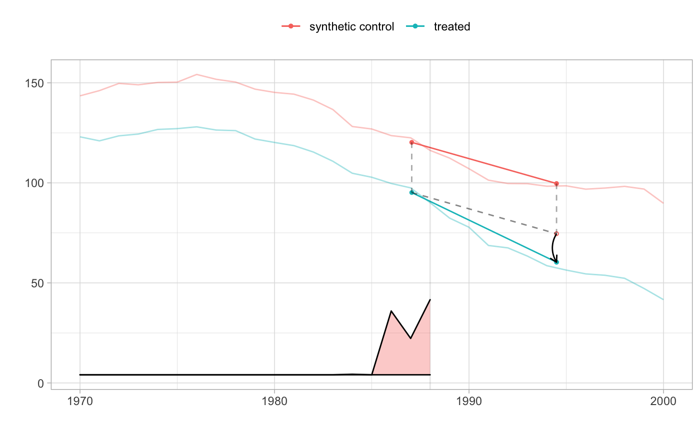

R/synthdid-package.R
synthdid-package.RdThis package implements the synthetic difference in difference estimator (SDID) for the average treatment effect in panel data, as proposed in Arkhangelsky et al (2019). We observe matrices of outcomes Y and binary treatment indicators W that we think of as satisfying Y[i,j] = L[i,j] + tau[i,j] W[i,j] + noise[i,j]. Here tau[i,j] is the effect of treatment on the unit i at time j, and we estimate the average effect of treatment when and where it happened: the average of tau[i,j] over the observations with W[i,j]=1. All treated units must begin treatment simultaneously, so W is a block matrix: W[i,j] = 1 for i > N0 and j > T0 and zero otherwise, with N0 denoting the number of control units and T0 the number of observation times before onset of treatment. This applies, in particular, to the case of a single treated unit or treated period.
This package is currently in beta and the functionality and interface is subject to change.
Some helpful links for getting started:
The R package documentation contains usage examples and method reference.
The online vignettes contains a gallery of plot examples.
For community questions and answers around usage, see Github issues page.
Useful links:
# \donttest{ # Estimate the effect of California Proposition 99 on cigarette consumption data('california_prop99') setup = panel.matrices(california_prop99) tau.hat = synthdid_estimate(setup$Y, setup$N0, setup$T0) se = sqrt(vcov(tau.hat, method='placebo')) sprintf('point estimate: %1.2f', tau.hat)#> [1] "point estimate: -15.60"#> [1] "95% CI (-37.14, 5.93)"plot(tau.hat)# }